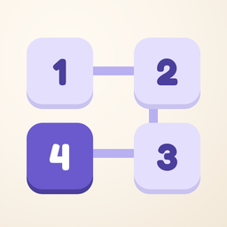

Chains
A cozy number-chain puzzle
Draw one chain through the grid, from 1 to the last square, so that every row and column adds up to the number on its edge. Every level has exactly one solution.
Frequently asked questions
How do I play?
Drag from the 1 to draw the chain. Each number must touch the next one, up, down, left or right. Drag back to erase, or tap any number in the chain to continue from there. The full tutorial is under How to play in the menu.
How do points and the leaderboard work?
Every heart you have left when you solve a level is worth 1 point. On the daily challenge, each heart is worth 5. You compete in a pool of up to 30 players, and the leaderboard resets every day at midnight (Central European Time).
What is the sum helper?
It shows how much is left in each row and column while you draw. Turn it off in Settings for a harder game. The daily challenge is always played without it.
Can I change my name?
Yes. Tap New name on the leaderboard to get a new random nickname.
How do I delete my data?
Go to Settings → Delete my online data. This removes your nickname and points from the leaderboard server. Your progress on the device is kept. Deleting the app removes the rest.
I found a bug or have an idea
I'd love to hear it! Email alfredtoget@gmail.com, and include your iPhone model and iOS version if something isn't working.